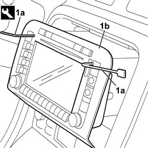
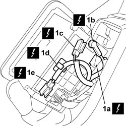
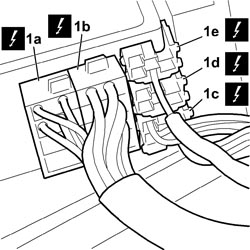
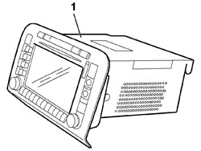

5580P12 CONNECT PANEL REPLACE
- Path
- Procedures > 55 ELECTRICAL EQUIPMENT > 5580 SPECIAL ACCESSORIES > 5580P CONNECT PANEL > 5580P12 CONNECT PANEL REPLACE
- Kind
- repair procedure (removal / refitting; the operation number is the code)
- Applies to
- all engines; all production periods
- Interactive page
- https://sloeber94.github.io/elrnDB-fCrm/en/#/194000825
Applies to: all engines; all production periods
 Removing
Removing
 Refitting
Refitting- Turn the ignition key to the OFF position.
- Disconnect the negative battery terminal.
Description | Connector | |
|---|---|---|
BATTERY |
1. Fit the extractors (1a) into the slots ont eh trim and remove Connect panel (1b), taking care with the electrical wiring on the rear.
Tool | Description | Function | Validity |
|---|---|---|---|
1875088000 | Extractor/Drift | Extractor | 2.2 |

Applies to: all engines; all production periods
1. Disconnect electrical connection (1a), radio aerial connection (1b) and GPS aerial (1c). Then release the GSM phone aerial wiring from retaining clip (1d) and disconnect electrical connection (1e).
Description | Connector | |
|---|---|---|
1 | RADIO |

Applies to: all engines; all production periods
1. Turn the Connect panel and disconnect the electrical connections (1a), (1b), (1c), (1d), (1e).
Description | Connector | |
|---|---|---|
1a | RADIO |
Description | Connector | |
|---|---|---|
1b | RADIO |
Description | Connector | |
|---|---|---|
1c | RADIO |
Description | Connector | |
|---|---|---|
1d | RADIO |
Description | Connector | |
|---|---|---|
1e | RADIO |

Applies to: all engines; all production periods
1. Remove the Connect panel from the vehicle.

Applies to: all engines; all production periods
Refitting
Removing- Check that the Connect panel is not damaged.
- Connect the electrical connections and the connections for the aerials.
Description | Connector | |
|---|---|---|
RADIO |
- Place the Connect panel in position taking great care and avoiding any interference with the cables at the back. If there is interference, check that the cables are correctly positioned.
- Connect the negative battery terminal.
Description | Connector | |
|---|---|---|
BATTERY |
- Check the operation of the Connect panel.
Topics linked from this page (2)
Topics that link to this page (29)
- N037 I.C.S. IS NOT CALCULATING ANY ROUTE
- N039 I.C.S. DETECTS INCORRECT POSITION
- N040 NAVIGATOR DOES NOT RECEIVE THE G.P.S. SATELITES
- N042 I.C.S. DOES NOT GIVE' AUDIO MESSAGES
- N060 CONNECT AUDIO NOT WORKING
- N065 CONNECT NOT WORKING
- 5580PE CHECK THE OPERATION OF THE CONNECT GPS AERIAL MODULE
- 2125C30 GEAR ENGAGEMENT/SELECTION CABLES - R.R
- 2125C32 GEAR CONTROL LEVER MOUNT - R R
- 2135A10 AUTOMATIC TRANSMISSION MANUAL CONTROL LEVER AND SUPPORT - R + R AND OVERHAUL
- 2135A12 GEAR ENGAGEMENT CABLE - R R
- 3330B02 PEDAL ASSEMBLY - R.R
- 3330B08 PEDAL MOUNT ASSEMBLY - R R AND OVERHAUL WITH FACIA TRIM SUPPORT BEAM REMOVED FOR RIGHT-HAND DRIVE VERSIONS
- 3330B22 BRAKE PEDAL - R+R FOR MANUAL GEARBOX VERSIONS
- 3330B26 CLUTCH PEDAL - R+R
- 3330B38 PEDAL UNIT MOUNT - R.R.
- 5040C10 AIR CONDITIONING CASING - R.R
- 5040C50 AIR CONDITIONING HEATER RADIATOR - R.R.
- 5040C64 A/C EVAPORATOR - R+R
- 5040D18 AIR CONDITIONING CONTROL UNIT - R.R.
- 5040D80 AIR CONDITIONER SYSTEM WIRING BUNDLE - R R OR REPLACE
- 5040D94 AIR CONDITIONING LEFT UPPER AIR DISTRIBUTION FLAP MOTOR (DEFROST) - R.R
- 5505C10 FRONT CROSSMEMBER WIRING - R.R
- 5505C31 BUILT-IN WIRING UNDER DASHBOARD - R.R.
- 7040A10 DASHBOARD TRIM - R+R
- 7040A60 UNDERDASHBOARD TRIM - R.R.
- 7040A85 R R HANDLE FOR FRONT SEAT FORE AND AFT ADJUSTMENT
- 7040A97 INSTRUMENT PANEL TRIM SUPPORTING CROSSMEMBER - R.R
- 7095E22 SOUND-PROOF PANEL UNDER DASHBOARD SUPPORTING CROSSMEMBER - R.R.